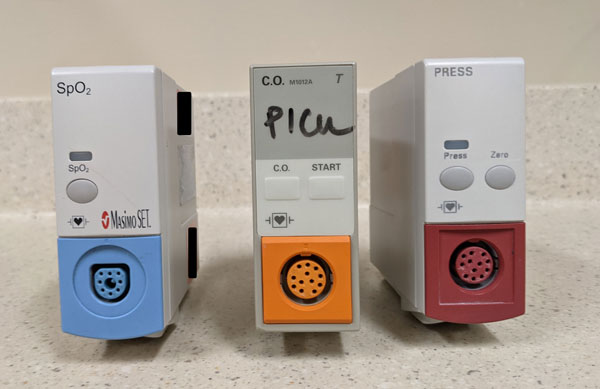

Bedside Monitor
The monitor at each patients bedside is referred to as the bedside monitor.
X2's & X3's
These small devices pairs to the bedside monitor. The X3 is the newer version of the X2. There is an attachment device that provides for xtra ports if needed. The X2 or X3 simply slides into the attachment device.
Boxes & Bricks


The X2 or X3 slides and clicks into this attachment. This attachment provides xtra outlets for pressure and co2 cables.
Accessory Boxes
These small FMS boxes plug into the base of the bedside monitor and provide xtra outlets for 02, pressure and Co2 cables.
Travel Monitor

This monitor can be removed from its mobile stand. When the patient is ready to travel the X2 or X3 is removed from the bedside monitor and inserted onto the back of the travel monitor. There are also extra slots for FMS accessory boxes.
Tele-Packs

If a patient is ambulatory and wants to go for a stroll around the unit they can be taken off the bedside monitor & monitoring can be continued with the use of a portable device called a tele-pack.
The tele-pack's like the X2's & X3's must be paired to the bedside monitor via the main telemetry station. Note that if a patient is utilizing a telepack for continous cardiac monitoring then the RN will be unable to print trends for that patient- as trends can only be printed from the bedside monitor.
Note that tele-packs are stored in the telmetry room, and must be signed out by the person retrieving the pack. When tele-packs are signed out for a patient– the patient name, room number, date & time must be filled out. The monitor-tech is reponsible for keeping track of devices.